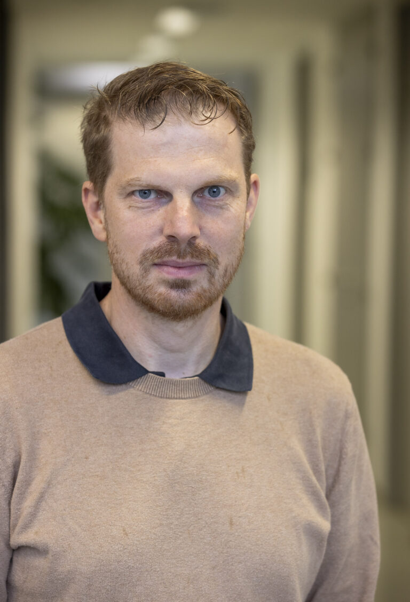

About
The rapid rise of foundation models and generative AI has brought unprecedented changes to how we understand and model geographic spaces. As these powerful systems increasingly shape real-world applications, we face critical questions about spatial representation bias and fairness. While AI ethics has become a central discussion globally, there is still a pressing need to explore these challenges specifically through the lens of geography and spatial sciences.
This workshop invites researchers and practitioners to dive into the intersection of geospatial intelligence and foundation models. We aim to build an active community dedicated to responsible GeoAI and better geographic alignment in AI systems to ensure future technologies effectively and ethically represent our world.
Topics include but are not limited to:
Ethics of GeoAI
- Geo-diversity
- Representation bias, Fairness, and Brittleness
- Geo-alignment of AI systems
GeoAI and Foundation Models (FM)
- (Geospatial) foundation models and Multi-modal models
- Spatial representation learning
- Explicit versus implicit geo-knowledge in FM
- Neurosymbolic approaches to improve representation
Evaluation and Governance
- (Agentic) GeoAI benchmarks
- Topological reasoning in LLM and text-to-image models
- Transparency and accountability of GeoFM
- Reproducibility and validation of GenAI and GeoAI research
Geographical Principles and Theories
- Alignment between GIScience concepts and AI representations
- Place-based reasoning versus abstract spatial reasoning
Case Studies and Experiments
- GenAI and GeoAI in participatory planning
- Impact of GenAI on tourism and Point of Interest recommenders
Archived Submission Information
Submission Format
Submissions were formatted using the standard CEURART template. Short papers of 4 to 6 pages were accepted, with full author information and no anonymization.
Publication and Outcomes
The selected papers are available in the AGILE 2026 GeoFM Workshop Proceedings on Zenodo. Discussions from the workshop are being documented, organized, and shared as a whitepaper by all interested participants.
Submission System
Manuscripts were submitted as PDF files via the EasyChair submission system.
Workshop Information
Workshop Program
The workshop took place on Tuesday, 16 June 2026 in Room 246. The full schedule is archived below.
Welcome and introduction to the workshop goals
Spatial Intelligence or Spatial Illusion? Evaluating Foundation Models in Geography

University of Salzburg
Foundation models are rapidly reshaping how geography is represented, reasoned about, and operationalized in GeoAI. Recent evaluations show that large language models can infer topological spatial relations from geometries with moderate accuracy, but they still struggle with geometric fidelity, contextual nuance, and region-specific knowledge (Ji et al., 2025). At the same time, industry initiatives such as Google's Population Dynamics Foundation Model and trajectory-based mobility models demonstrate how multimodal geo-foundation models are becoming infrastructures for population analysis, mobility prediction, and climate-relevant decision support (Schottlander & Shekel, 2025). A growing body of systematic reviews highlights both the promise and the limitations of these models: while commercial LLMs can interpret geospatial concepts and generate functional code, they remain constrained by opaque training data, uneven global representation, and limited autonomy in complex spatial tasks (Dorobantu & Badea, 2026).
Against this backdrop, this talk examines how foundation models construct geographic knowledge — often over-privileging well-represented regions while being inaccurate or hallucinating about underrepresented places. We connect these representational biases to emerging benchmark results in geocoding, elevation estimation, and spatial reasoning, raising critical questions about whether and how LLMs should be treated as geographic knowledge generators. Complementing this, we foreground uncertainty as a cross-cutting challenge in GeoAI. Across domains such as wildfire risk, cattle movement, energy modeling, and supply-chain prediction, both aleatoric uncertainty (sensor noise, measurement error, stochastic processes) and epistemic uncertainty (model structure, data sparsity, domain shift) impact model outputs and their downstream use. Strategies such as probabilistic modeling, ensemble learning, and spatially explicit uncertainty mapping offer promising mitigation pathways — but they must be adapted to the new realities of foundation-model pipelines, where uncertainty is often hidden behind fluent text or single deterministic predictions. By bringing together conceptual, empirical, and applied perspectives, this talk aims to articulate a shared research agenda for equitable and trustworthy geo-foundation models.
10:00 – 10:15
Bench4GeoCode: A Benchmark for Natural Language to Geospatial Code Generation
Medha Iyer, Annisa Puspa Kirana, Rolf A. de By and Mahdi Farnaghi
10:15 – 10:30
From Diversity to Validity: The Statistical Fidelity of LLM-Generated Synthetic Populations
Songlin Wang, Mina Karimi, Zilong Liu, Annika Süß and Patrick Sakdapolrak
10:30 – 10:45
Geoprivacy Leaks in Autonomous Agent-to-Agent (A2A) Conversations
Omid Reza Abbasi and Johannes Scholz
11:15 – 11:30
Do foundation models have local knowledge? A case study on bicycle routing in Graz
Ivan Majic, Franz Welscher and Franziska Huebl
11:30 – 11:45
Do AI Models Remember History? Representing Phantom Borders in Large Language Models
Mina Karimi, Songlin Wang, Zilong Liu and Annika Süß
Prototype Explorer: An Observatory for Geographic Category Norms in Large Language Models
By Zilong Liu
University of Vienna
A hands-on demonstration of Prototype Explorer, an interactive observatory for examining the geographic category norms produced by large language models. The tutorial walks through how the tool surfaces and probes implicit spatial assumptions in model outputs, offering a practical lens on representation bias in GeoAI.
LLM-VCRS: LLM-Derived Vague Cognitive Region System
By Mina Karimi
University of Vienna
A hands-on demonstration of LLM-VCRS (LLM-Derived Vague Cognitive Region System), a Web-GIS platform for interactively visualizing how large language models represent vague cognitive regions across the world. The tutorial showcases how the system reveals and compares the geo-alignment of spatial concepts generated by foundation models, including GeoAI-enhanced approaches, providing an exploratory lens on how LLMs encode and diverge in their geographic understanding of human-defined regions.
Geography according to foundation models: Promise, limits, and future agendas
This panel brings together researchers working at the intersection of geography, GIScience, and foundation models to discuss the promises and limits of GeoFMs. The discussion will focus on whether current models capture meaningful geographic knowledge, what prevents reliable autonomous GIS agents, and how future GeoFMs can better account for local knowledge, spatial bias, uncertainty, and responsible use.
Panelists
- Prof. Dr. Johannes Scholz
- Dr. Rui Zhu
- Dr. Ivan Majic
- Zilong Liu
Workshop Gallery
A few moments from the AGILE 2026 GeoFM workshop in Tartu.
Organizing Committee
Programme Committee
- Ana Basiri, University of Glasgow
- Song Gao, University of Wisconsin-Madison
- Yingjie Hu, University at Buffalo
- Weiming Huang, University of Leeds
- Mina Karimi, University of Vienna
- Johannes Scholz, University of Salzburg
- Zhangyu Wang, University of Maine
- Meiliu Wu, University of Glasgow